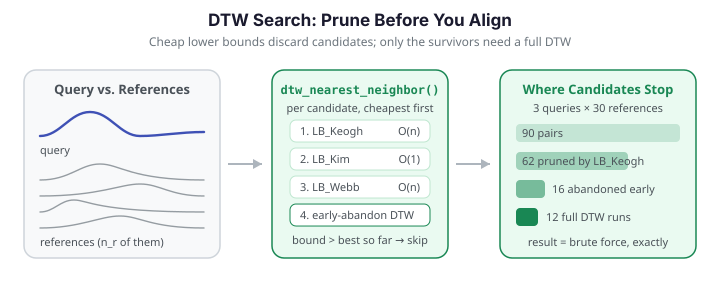

DTW Search & Averaging¶
Distance Metrics covers the DTW and soft-DTW distance matrices (dtw_self_1d, soft_dtw_self_1d, ...). This page covers the toolkit around a single DTW computation: global windows, the optimal warping path, lower bounds and early abandoning, exact nearest-neighbour search, averaging curves under DTW (DBA and the soft-DTW barycenter), the soft alignment matrix, the triangular Global Alignment Kernel, and multichannel DTW.
All functions live in fdars.metric. They work on raw sampled series (no argvals): DTW matches sample indices, so the curves should share a sampling rate, though their lengths may differ. DTW used to register curves (as opposed to measuring distance between them) is covered in the Align section.

Cost convention: no square root
Every function here reports the accumulated cost \(\sum_{(i,j)\in\pi} |x_i - y_j|^p\) along the optimal path \(\pi\), without taking a \(p\)-th root. That matches dtw_self_1d; tslearn and dtaidistance report the square root of the \(p = 2\) cost. Take np.sqrt if you compare with them.
Global windows¶
A global window restricts which cells \((i, j)\) the warping path may visit. It stops pathological warps (one sample matched to half of the other series) and makes DTW faster. Every windowed function takes the same four keyword arguments:
window= |
Extra argument | Admissible cells | Convention |
|---|---|---|---|
"none" (default) |
— | all | unconstrained DTW |
"sakoe_chiba" |
radius (int) |
\(\lvert i - j\rvert \le\) radius (adjusted for unequal lengths) |
tslearn |
"itakura" |
max_slope (\(\ge 1\)) |
parallelogram with slopes max_slope and 1/max_slope |
tslearn |
"sakoe_chiba_fraction" |
window_fraction in \([0, 1]\) |
band half-width as a fraction of the length | aeon window= |
"itakura_fraction" |
max_slope in \((0, 1]\) |
aeon's Itakura bounding matrix | aeon itakura_max_slope= |
dtw_window_mask(n, m, ...) returns the boolean admissibility grid, so you can inspect a window before using it. The path below is the same pair of curves aligned three times; constraining the window can only raise the cost, because it removes candidate paths.
import numpy as np
from docs_fig import fig, render
from fdars.metric import dtw_path, dtw_window_mask
t = np.linspace(0, 1, 40)
x = np.sin(2 * np.pi * t)
y = np.sin(2 * np.pi * t ** 1.6) # the same wave, time-warped
C = (x[:, None] - y[None, :]) ** 2 # local cost |x_i - y_j|^2
free = dtw_path(x, y)
band = dtw_path(x, y, window="sakoe_chiba", radius=4)
itak = dtw_path(x, y, window="itakura", max_slope=2.0)
f, axes = fig(1, 3, figsize=(12, 3.9))
for ax, (title, res, mask) in zip(axes, [
("no window", free, None),
("Sakoe-Chiba, radius=4", band, dtw_window_mask(40, 40, window="sakoe_chiba", radius=4)),
("Itakura, max_slope=2", itak, dtw_window_mask(40, 40, window="itakura", max_slope=2.0)),
]):
ax.imshow(C, cmap="Greys", origin="lower")
if mask is not None:
ax.contour(mask.astype(float), levels=[0.5], colors="#e8710a", linewidths=1.2)
p = res["path"]
ax.plot(p[:, 1], p[:, 0], color="#3f51b5", lw=2.2)
ax.set(title=f"{title}\ncost = {res['cost']:.3f}", xlabel="j (y index)", ylabel="i (x index)")
print(render(f))
print("FDARS_FENCE_OK")
Grey is the local cost (dark means a poor match), orange the window boundary, blue the optimal path. The unconstrained path bends far from the diagonal to follow the warp. A radius-4 band cannot follow it and pays a cost about 13 times higher. The Itakura parallelogram allows the bend in the middle of the series but pins both ends.
Paths and windowed distances¶
| Function | Returns |
|---|---|
dtw_path(x, y, p=2.0, window=...) |
{"path": int64 (L, 2) of (i, j) pairs, "cost": float} |
dtw_distance_windowed(x, y, p=2.0, window=...) |
the cost only, in \(O(m)\) memory |
soft_dtw_distance_windowed(x, y, gamma=1.0, window=...) |
soft-DTW value (squared local cost) |
soft_dtw_alignment(x, y, gamma=1.0, window=...) |
{"value", "alignment": (n, m)} |
dtw_distance_windowed equals dtw_path(...)["cost"] and, with window="none", the entries of dtw_self_1d. The two series may have different lengths.
soft_dtw_alignment returns the soft-DTW value and the expected alignment matrix: entry \((i, j)\) is the probability that cell \((i, j)\) lies on the path under the Gibbs distribution over all paths, \(P(\pi) \propto \exp(-\text{cost}(\pi)/\gamma)\). The corner cells are always 1 and rows do not sum to 1. As \(\gamma \to 0\) the matrix approaches the 0/1 indicator of the hard DTW path; larger \(\gamma\) spreads the mass over near-optimal paths. Soft-DTW values can be negative, because the soft minimum is \(-\gamma \log \sum \exp(-\cdot/\gamma)\).
import numpy as np
from fdars.metric import dtw_path, soft_dtw_alignment
t = np.linspace(0, 1, 40)
x = np.sin(2 * np.pi * t)
y = np.sin(2 * np.pi * t ** 1.6)
hard = np.zeros((40, 40))
p = dtw_path(x, y)["path"]
hard[p[:, 0], p[:, 1]] = 1.0
for gamma in (1.0, 0.1, 0.01):
E = soft_dtw_alignment(x, y, gamma=gamma)["alignment"]
print(f"gamma={gamma:<5} corners={E[0, 0]:.2f},{E[-1, -1]:.2f} "
f"mass on hard path={E[hard == 1].sum() / E.sum():.3f}")
print("FDARS_FENCE_OK")
gamma=1.0 corners=1.00,1.00 mass on hard path=0.271
gamma=0.1 corners=1.00,1.00 mass on hard path=0.436
gamma=0.01 corners=1.00,1.00 mass on hard path=0.643
FDARS_FENCE_OK
As \(\gamma\) shrinks, the expected alignment concentrates on the hard DTW path.
Lower bounds and early abandoning¶
Finding the nearest neighbour of a query under DTW means one \(O(nm)\) DTW per candidate. Lower bounds are cheap functions that never exceed the DTW cost. If a bound already exceeds the best distance found so far, the candidate can be skipped without running DTW. All bounds use the same cost convention and window as dtw_distance_windowed, so they bound exactly that quantity.
| Function | Bound | Cost | Notes |
|---|---|---|---|
lb_kim(x, y, p=2.0) |
first / last / min / max features (Kim, Park & Chu 2001) | \(O(1)\) after \(O(n)\) | valid under any window; loose |
lb_keogh(query, candidate, p=2.0, window=...) |
distance from the query to the candidate's envelope (Keogh 2002) | \(O(n)\) | the envelope is built internally |
lb_improved(x, y, p=2.0, window=...) |
LB_Keogh plus a second pass (Lemire 2009) | \(O(n)\) | LB_Keogh ≤ LB_Improved ≤ DTW |
lb_webb(x, y, p=2.0, window=...) |
LB_Webb (Webb & Petitjean 2021) | \(O(n)\) | generalised to every window |
lb_enhanced(x, y, v, p=2.0, window=...) |
v boundary bands + Keogh in between (Tan, Petitjean & Webb 2019) |
\(O(n)\) | v >= 1; larger v is tighter and slower |
dtw_distance_early_abandon(x, y, cutoff, ...) |
— | ≤ \(O(nm)\) | EAPrunedDTW (Herrmann & Webb 2021): the exact DTW, or None once it must exceed cutoff |
lb_envelope(x, radius) and lb_envelope_windowed(y, query_len, window=...) return the {"lower", "upper"} envelope itself, e.g. to precompute envelopes for a fixed reference set. The envelope is the running min/max of the series over the window. lb_keogh cannot take a precomputed envelope from Python; it rebuilds the candidate's envelope on each call.
import numpy as np
import fdars.metric as fm
t = np.linspace(0, 1, 60)
x = np.sin(2 * np.pi * t)
y = np.sin(2 * np.pi * (t - 0.05)) + 0.1 * np.cos(9 * np.pi * t)
w = dict(window="sakoe_chiba", radius=3)
dtw = fm.dtw_distance_windowed(x, y, **w)
bounds = {
"LB_Kim": fm.lb_kim(x, y),
"LB_Keogh": fm.lb_keogh(x, y, **w),
"LB_Improved": fm.lb_improved(x, y, **w),
"LB_Webb": fm.lb_webb(x, y, **w),
"LB_Enhanced(v=4)": fm.lb_enhanced(x, y, 4, **w),
}
for name, lb in bounds.items():
print(f"{name:17s} {lb:8.4f} <= DTW: {lb <= dtw + 1e-12}")
print(f"{'DTW':17s} {dtw:8.4f}")
print("early abandon, cutoff 0.5 :", fm.dtw_distance_early_abandon(x, y, 0.5, **w))
print("early abandon, cutoff 10 :", round(fm.dtw_distance_early_abandon(x, y, 10.0, **w), 4))
print("FDARS_FENCE_OK")
LB_Kim 0.2110 <= DTW: True
LB_Keogh 0.4049 <= DTW: True
LB_Improved 0.4878 <= DTW: True
LB_Webb 0.4823 <= DTW: True
LB_Enhanced(v=4) 0.4508 <= DTW: True
DTW 0.5119
early abandon, cutoff 0.5 : None
early abandon, cutoff 10 : 0.5119
FDARS_FENCE_OK
Exact nearest-neighbour search¶
dtw_nearest_neighbor(queries, references, ...) and dtw_k_nearest_neighbors(queries, references, k, ...) run the UCR-suite-style cascade from the diagram above: references are visited in LB_Keogh order, then LB_Kim, LB_Webb and an early-abandoning DTW (with the current k-th best distance as cutoff) discard candidates. The result is exact: it equals brute force over all references, in both index and distance. The stats dict counts where each candidate was pruned, so you can see how much work the bounds saved.
import numpy as np
from fdars.metric import dtw_nearest_neighbor, dtw_k_nearest_neighbors, dtw_distance_windowed
rng = np.random.default_rng(1)
m = 80
t = np.linspace(0, 1, m)
bump = lambda c: np.exp(-0.5 * ((t - c) / 0.07) ** 2)
refs = np.array([bump(rng.uniform(0.2, 0.8)) + 0.05 * rng.standard_normal(m) for _ in range(30)])
queries = np.array([bump(0.5) + 0.05 * rng.standard_normal(m) for _ in range(3)])
w = dict(window="sakoe_chiba", radius=8)
nn = dtw_nearest_neighbor(queries, refs, **w)
brute = np.array([[dtw_distance_windowed(q, r, **w) for r in refs] for q in queries])
print("1-NN indices :", nn["indices"], " brute force:", brute.argmin(axis=1))
print("distances match :", np.allclose(nn["distances"], brute.min(axis=1)))
print("pruning stats :", nn["stats"])
knn = dtw_k_nearest_neighbors(queries, refs, k=3, **w)
print("3-NN of query 0 :", knn["indices"][0], np.round(knn["distances"][0], 3))
print("FDARS_FENCE_OK")
1-NN indices : [27 13 13] brute force: [27 13 13]
distances match : True
pruning stats : {'pruned_lb_keogh': 62, 'pruned_lb_kim': 0, 'pruned_lb_webb': 0, 'early_abandoned': 16, 'dtw_completed': 12}
3-NN of query 0 : [27 0 13] [0.115 0.124 0.125]
FDARS_FENCE_OK
Of the 90 query-reference pairs, LB_Keogh discards 62 outright and early abandoning stops 16 more part-way through, so only 12 full DTW computations are needed.
Averaging under DTW¶
The pointwise mean of curves with timing variation smears their features: averaging bumps at different positions gives a low, wide bump. A DTW barycenter is instead a curve \(b\) that minimises the (weighted) sum of DTW costs to the sample, so it keeps the shape of the individual curves.
- DBA (
dtw_barycenter_averaging, Petitjean et al. 2011) alternates between aligning every curve to the current barycenter withdtw_pathand replacing each barycenter sample by the mean of all samples matched to it. Each iteration does not increase the mean cost (Schultz & Jain 2018).initis"mean"(default),"medoid"or a 1-D array;barycenter_sizechanges the barycenter length;weightsgives a weighted barycenter; the window applies to every alignment. The returnedcostis the weighted mean DTW cost to the curves. - Soft-DTW barycenter (
soft_dtw_barycenter, Cuturi & Blondel 2017) minimises the sum of soft-DTW values with L-BFGS. It is differentiable, so it converges smoothly;gammatrades fidelity to the hard DTW geometry (small) against smoothness (large values approach the pointwise mean).n_restartsruns (default 10) start from the mean and from perturbed means, and the best is kept.
import numpy as np
from docs_fig import fig, render
from fdars.metric import dtw_barycenter_averaging, soft_dtw_barycenter
rng = np.random.default_rng(1)
t = np.linspace(0, 1, 80)
X = np.array([np.exp(-0.5 * ((t - c) / 0.07) ** 2) for c in rng.uniform(0.35, 0.65, 12)])
dba = dtw_barycenter_averaging(X, window="sakoe_chiba", radius=15)
sdb = soft_dtw_barycenter(X, gamma=0.1, n_restarts=3)
f, ax = fig(figsize=(8, 3.6))
for xi in X:
ax.plot(t, xi, color="#6c757d", lw=1.0, alpha=0.45)
ax.plot(t, X.mean(axis=0), color="#dc3545", lw=2.2, ls="--", label="pointwise mean")
ax.plot(t, dba["barycenter"], color="#3f51b5", lw=2.6, label="DBA")
ax.plot(t, sdb["barycenter"], color="#e8710a", lw=2.0, label="soft-DTW barycenter (gamma=0.1)")
ax.set(title="Twelve shifted bumps and three averages", xlabel="t")
ax.legend(fontsize=9)
print(render(f))
print(f"<p>peak height: mean {X.mean(axis=0).max():.2f}, DBA {dba['barycenter'].max():.2f}, "
f"soft-DTW {sdb['barycenter'].max():.2f} (each curve peaks at 1.00); "
f"DBA converged={dba['converged']} after {dba['n_iter']} iterations</p>")
print("FDARS_FENCE_OK")
peak height: mean 0.60, DBA 0.96, soft-DTW 0.96 (each curve peaks at 1.00); DBA converged=True after 14 iterations
FDARS_FENCE_OKBoth barycenters keep a peak close to the height of the individual curves (each peaks at 1). The pointwise mean flattens it to about 0.6. The DTW k-means clusterer uses DBA for its centroids.
Triangular Global Alignment Kernel¶
The Global Alignment Kernel (Cuturi 2011) sums a local similarity over all alignment paths instead of taking the best one, which makes it a positive semi-definite kernel. Cuturi's triangular variant only admits cells with \(\lvert i - j\rvert < T\), a band that is both faster and keeps the kernel PSD. gak_triangular(x, y, sigma, triangular=T) returns the normalised value in \([0, 1]\) (1 for \(x = y\)); T = 0 disables the band and equals gak. gak_gram_matrix and gak_gram_train accept the same triangular= keyword, and gak_gram_predict reuses the training value. See Shapelets for the Gram-matrix workflow with a precomputed-kernel SVM.
import numpy as np
from fdars.metric import gak, gak_triangular, sigma_gak, gak_gram_matrix
rng = np.random.default_rng(1)
t = np.linspace(0, 1, 80)
X = np.array([np.exp(-0.5 * ((t - c) / 0.07) ** 2) for c in rng.uniform(0.35, 0.65, 12)])
s = sigma_gak(X)
print(f"sigma_gak = {s:.3f}")
print(f"T=0 : {gak_triangular(X[0], X[1], s):.4f} (gak: {gak(X[0], X[1], s):.4f})")
print(f"T=10 : {gak_triangular(X[0], X[1], s, triangular=10):.4f}")
K = gak_gram_matrix(X, triangular=10)
print(f"Gram (T=10): unit diagonal {np.allclose(np.diag(K), 1)}, "
f"min eigenvalue {np.linalg.eigvalsh(K).min():.1e}")
print("FDARS_FENCE_OK")
sigma_gak = 2.824
T=0 : 0.3033 (gak: 0.3033)
T=10 : 0.1224
Gram (T=10): unit diagonal True, min eigenvalue 1.9e-07
FDARS_FENCE_OK
Narrowing the band lowers the similarity of curves whose features are far apart in time, because the paths that would match them are excluded.
Multichannel DTW¶
For series with \(d\) channels (e.g. x/y/z acceleration), pass each series as a (d, m) array: channels as rows, time as columns (aeon's layout). The local cost is dependent across channels, \(\big(\sum_c (x_{c,i} - y_{c,j})^2\big)^{p/2}\), so all channels share one warping path. With \(d = 1\) every function gives bit-identical results to its univariate counterpart.
| Function | Input | Returns |
|---|---|---|
dtw_distance_multivariate(x, y, p=2.0, window=...) |
two (d, n) / (d, m) arrays |
float |
dtw_path_multivariate(x, y, ...) |
as above | {"path", "cost"} |
dtw_pairwise_distance_multivariate(data, other=None, ...) |
list of (d, m_i) arrays or (n, d, m) |
(n, n) or (n, n_other) |
dtw_barycenter_averaging_multivariate(data, ...) |
as above | {"barycenter": (d, L), "cost", "n_iter", "converged"} |
Collections may mix series lengths but not channel counts.
import numpy as np
import fdars.metric as fm
rng = np.random.default_rng(2)
t = np.linspace(0, 1, 80)
def series(c): # 2 channels: a bump and its slope
b = np.exp(-0.5 * ((t - c) / 0.07) ** 2)
return np.vstack([b, np.gradient(b, t) / 20])
S = np.stack([series(c) for c in rng.uniform(0.3, 0.7, 6)]) # (n, d, m) = (6, 2, 80)
D = fm.dtw_pairwise_distance_multivariate(S, window="sakoe_chiba", radius=15)
bary = fm.dtw_barycenter_averaging_multivariate(S, window="sakoe_chiba", radius=15)
print("pairwise matrix:", D.shape, " symmetric:", np.allclose(D, D.T))
print("barycenter shape:", bary["barycenter"].shape, " mean cost:", round(bary["cost"], 4))
uni = fm.dtw_distance_windowed(S[0, 0], S[1, 0])
mv = fm.dtw_distance_multivariate(S[0, :1], S[1, :1])
print("d=1 equals univariate:", uni == mv)
print("FDARS_FENCE_OK")
pairwise matrix: (6, 6) symmetric: True
barycenter shape: (2, 80) mean cost: 0.0312
d=1 equals univariate: True
FDARS_FENCE_OK
Which tool for which job¶
| Task | Use |
|---|---|
| Inspect how two series are matched | dtw_path, dtw_window_mask |
| Distance matrix for clustering or kernels | dtw_self_1d / dtw_cross_1d (Distance Metrics) |
| 1-NN or k-NN classification on many references | dtw_nearest_neighbor, dtw_k_nearest_neighbors |
| Custom search loop with your own pruning | lb_* bounds + dtw_distance_early_abandon |
| Representative curve of a group | dtw_barycenter_averaging (or soft_dtw_barycenter for a smoother average) |
| Positive semi-definite kernel for an SVM or kernel k-means | gak_gram_matrix(..., triangular=T) |
| Other elastic measures (ERP, TWE, MSM, LCSS, ...) | Elastic Time-Series Distances |
References¶
- Sakoe, H. & Chiba, S. (1978). Dynamic programming algorithm optimization for spoken word recognition. IEEE Transactions on Acoustics, Speech, and Signal Processing, 26(1), 43–49.
- Itakura, F. (1975). Minimum prediction residual principle applied to speech recognition. IEEE Transactions on Acoustics, Speech, and Signal Processing, 23(1), 67–72.
- Kim, S.-W., Park, S. & Chu, W. W. (2001). An index-based approach for similarity search supporting time warping in large sequence databases. Proceedings of the 17th International Conference on Data Engineering (ICDE).
- Keogh, E. (2002). Exact indexing of dynamic time warping. Proceedings of the 28th International Conference on Very Large Data Bases (VLDB), 406–417.
- Lemire, D. (2009). Faster retrieval with a two-pass dynamic-time-warping lower bound. Pattern Recognition, 42(9), 2169–2180.
- Tan, C. W., Petitjean, F. & Webb, G. I. (2019). Elastic bands across the path: a new framework and method to lower bound DTW. Proceedings of the 2019 SIAM International Conference on Data Mining (SDM).
- Webb, G. I. & Petitjean, F. (2021). Tight lower bounds for dynamic time warping. Pattern Recognition, 115, 107895.
- Herrmann, M. & Webb, G. I. (2021). Early abandoning and pruning for elastic distances including dynamic time warping. Data Mining and Knowledge Discovery, 35(6), 2577–2601.
- Petitjean, F., Ketterlin, A. & Gançarski, P. (2011). A global averaging method for dynamic time warping, with applications to clustering. Pattern Recognition, 44(3), 678–693.
- Schultz, D. & Jain, B. (2018). Nonsmooth analysis and subgradient methods for averaging in dynamic time warping spaces. Pattern Recognition, 74, 340–358.
- Cuturi, M. & Blondel, M. (2017). Soft-DTW: a differentiable loss function for time-series. Proceedings of the 34th International Conference on Machine Learning (ICML), PMLR 70, 894–903.
- Cuturi, M. (2011). Fast global alignment kernels. Proceedings of the 28th International Conference on Machine Learning (ICML), 929–936.